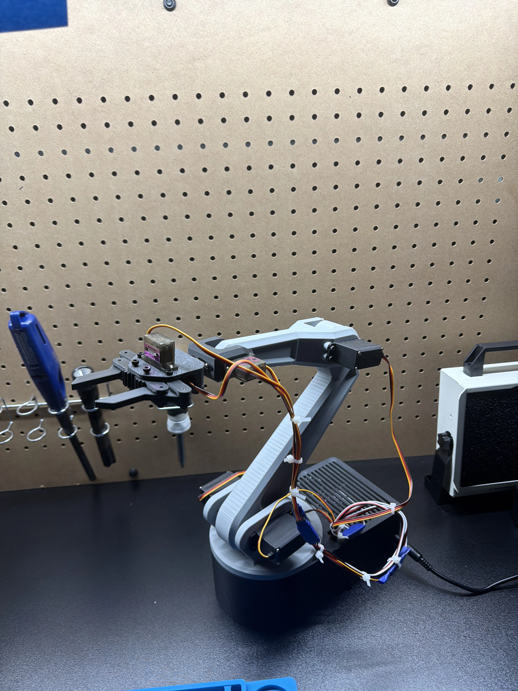

<section class="py-20 bg-white dark:bg-gray-900">
  <div class="max-w-6xl mx-auto px-6">
    <h1 class="text-4xl md:text-5xl font-bold text-center mb-12 text-gray-900 dark:text-gray-100 tracking-tight">
      Robot Arm - A.N.T.H.O.N.Y. (Automated Novel Tool for Handling Objects Neatly, Yup)
    </h1>

    <div class="bg-gray-50 dark:bg-gray-800/60 backdrop-blur-sm rounded-xl p-6 border border-gray-200 dark:border-gray-600 mb-12 flex flex-col md:flex-row items-center gap-6">
      <div class="flex-1">
        <h2 class="text-2xl font-mono text-emerald-600 dark:text-emerald-400 mb-4">Overview</h2>
        <p class="text-gray-900 dark:text-gray-100 mb-4">
          Time-sensitive weekend project to demonstrate high-stakes deadline for simulated deliverable
        </p>
        <p class="text-sm italic text-gray-600 dark:text-gray-300">
          Goals: Construct servo-controlled robotic arm to wave at guests during NYE party with strict 48 hour deadline.
        </p>
      </div>
      <figure class="flex-1 max-w-md">
        
        <figcaption class="text-sm text-gray-600 dark:text-gray-300 italic mt-2 text-center">Basic waving with simple servo control</figcaption>
      </figure>
    </div>

    <div class="bg-gray-50 dark:bg-gray-800/60 backdrop-blur-sm rounded-xl p-6 border border-gray-200 dark:border-gray-600 mb-12 flex flex-col md:flex-row-reverse items-center gap-6">
      <div class="flex-1">
        <h2 class="text-2xl font-mono text-emerald-600 dark:text-emerald-400 mb-4">Open Source Design</h2>
        <p class="text-gray-900 dark:text-gray-100 mb-4">
          Found simple design to reduce learning overhead, but putting emphasis on learning core-concepts along the way -- did this to accomplish task within deadline. 3D printed all assembled parts.
        </p>
      </div>
      <figure class="flex-1 max-w-md">
        
        <figcaption class="text-sm text-gray-600 dark:text-gray-300 italic mt-2 text-center">3D print timelapse</figcaption>
      </figure>
    </div>

    <div class="bg-gray-50 dark:bg-gray-800/60 backdrop-blur-sm rounded-xl p-6 border border-gray-200 dark:border-gray-600 mb-12 flex flex-col md:flex-row items-center gap-6">
      <div class="flex-1">
        <h2 class="text-2xl font-mono text-emerald-600 dark:text-emerald-400 mb-4">Electronics Assembly</h2>
        <ul class="space-y-2 text-sm text-gray-600 dark:text-gray-300">
          <li>› 4x MG996R Servos</li>
          <li>› 2x MG90S Servos</li>
          <li>› ESP32</li>
          <li>› PCA9685 (servo control)</li>
        </ul>
      </div>
      <figure class="flex-1 max-w-md">
        
        <figcaption class="text-sm text-gray-600 dark:text-gray-300 italic mt-2 text-center">MVP Assembly</figcaption>
      </figure>
    </div>

    <div class="bg-gray-50 dark:bg-gray-800/60 backdrop-blur-sm rounded-xl p-6 border border-gray-200 dark:border-gray-600 mb-12 flex flex-col md:flex-row-reverse items-center gap-6">
      <div class="flex-1">
        <h2 class="text-2xl font-mono text-emerald-600 dark:text-emerald-400 mb-4">Testing Struggles</h2>
        <p class="text-gray-900 dark:text-gray-100 mb-4">
          Lots of try-fails. Servo control via PWM was new. Took quite a few tries to calibrate
        </p>
      </div>
      <figure class="flex-1 max-w-md">
        
        <figcaption class="text-sm text-gray-600 dark:text-gray-300 italic mt-2 text-center">Initial Power-on Fail</figcaption>
      </figure>
    </div>

    <div class="text-center">
      <app-button variant="secondary" routerLink="..">Back to Projects</app-button>
    </div>
  </div>
</section>